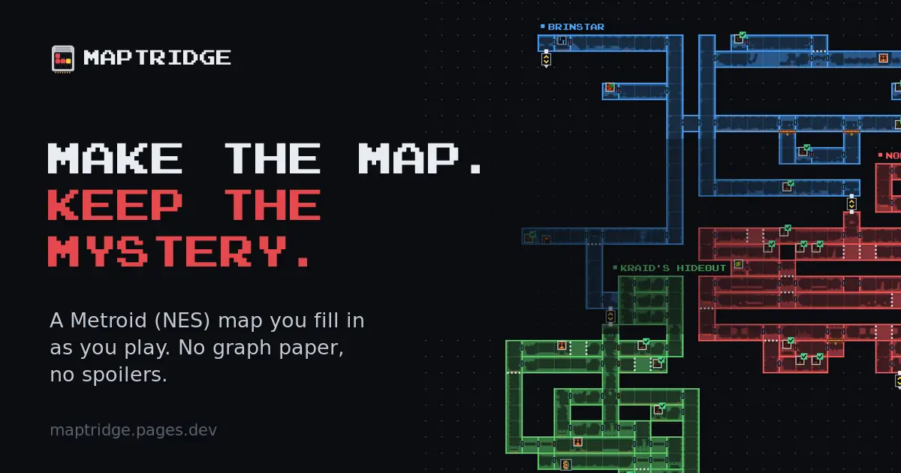
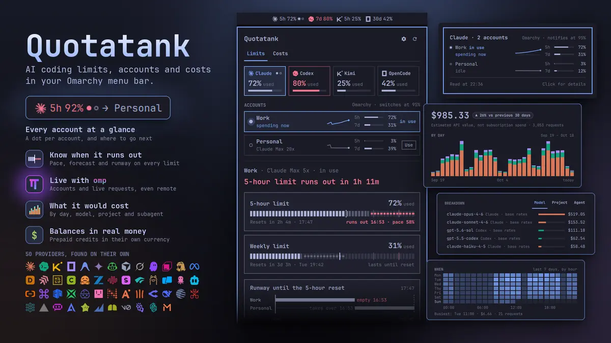
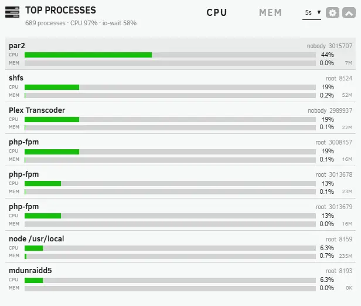
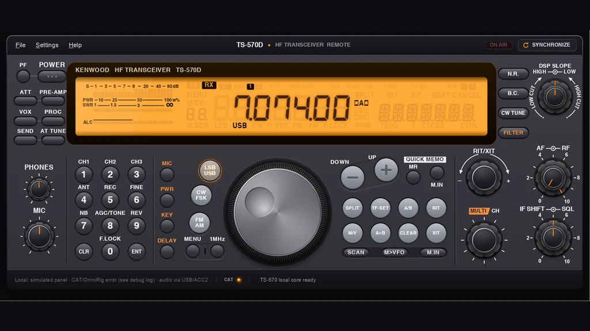

Maptridge
Interactive game maps you fill in as you play, without spoilers. The first map is Metroid (NES): one click per room, the game's real screens when you zoom in, hints before spoilers, and RetroAchievements live.
Medical student and generalist. I pick up whatever problem looks interesting and see it through, from game maps to GPU driver bugs.
I'm not a professional developer, just stubborn about fixing things. I started programming to solve my own problems, and it grew from there: first the tools I needed, then the ones other people needed too.
Medicine is my real passion. I haven't finished the degree yet, and where medicine meets technology is where I'd most like to end up.
Away from the keyboard I repair things: retro consoles and controllers, computers, CRT TVs and old radios. I restored my Kenwood TS-570D, then wrote it an app. On the air I mostly chase HF DX and FT8. I also solder my own Arduino and ESP32 projects, take my medical notes with a fountain pen, and play guitar, piano and alto sax, all of them badly.

Interactive game maps you fill in as you play, without spoilers. The first map is Metroid (NES): one click per room, the game's real screens when you zoom in, hints before spoilers, and RetroAchievements live.

Every AI coding limit, account and dollar in the Omarchy menu bar: how much is left, which account is spending it, and when it comes back, across 50 providers. Published and verified in the Omarchy plugin marketplace.

An Unraid dashboard tile that shows which processes are using the CPU and memory, in Unraid's own style.

A front-panel-style Windows app to control a Kenwood TS-570D radio over CAT.
Per-disk, per-attribute alert filtering for Scrutiny's SMART notifications: silence one reviewed disk without muting the channel, with readable Telegram alerts.
A one-click light/dark toggle in the Unraid header that can follow your operating system's colour scheme.
For months, Immich's OpenVINO face detection broke on Intel NAS iGPUs. Faces vanished, and the maintainers couldn't reproduce it.
I isolated the cause to dynamic shapes on that GPU and OpenVINO release, filed the upstream report with a self-contained repro (openvino#36831), and confirmed Intel's fix on the affected hardware. My test script became the basis of the community workaround until the fix shipped.
TypeScript · Python · C# / WPF · QML · PHP · Shell · Docker · Linux · Unraid · Cloudflare · a soldering iron
Open to health-tech, open source and homelab tools, games and retro, or any problem that looks interesting. Email is the best way to reach me: janitorhead@icloud.com